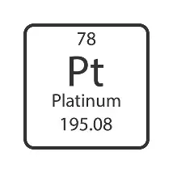

Platino (Pt)
← Regresar a la tabla periódica

Elemento químico de número atómico 78 y símbolo Pt.
Metal precioso de color blanco plateado, muy denso (21,45 g/cm³),
resistente a la corrosión y con un punto de fusión elevado (1768 °C).
Se utiliza en joyería de alta gama, catalizadores de automóviles,
equipos de laboratorio, dispositivos médicos e industria química.